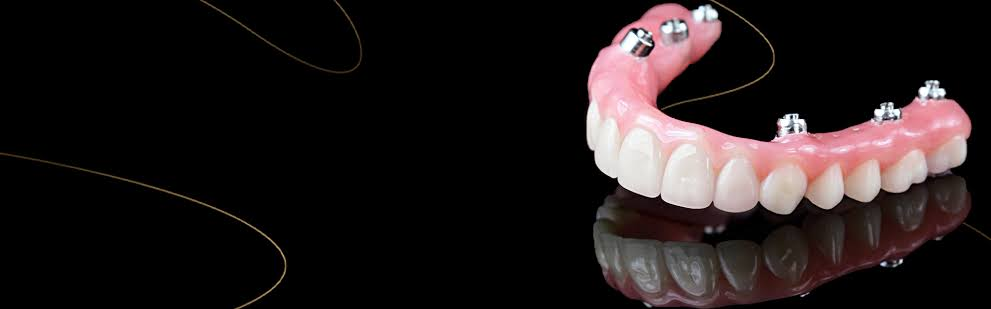
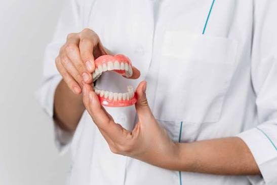

🏗️ Hibrit ve Akrilik Protez Çözümlerimiz


İleri derecede kemik erimesi ve çoklu diş eksikliği yaşayan hastalar için All-on-4 ve All-on-6 cerrahi konseptleri doğrultusunda tasarlanan hibrit ve akrilik protezler, hem sabit protez konforunu hem de hareketli protezlerin doku destek yeteneğini tek yapıda sunar. Bu sistemlerin altyapısı laboratuvarımızda titanyum barlar (Ti-Bar) veya kobalt-krom alaşımlarla üretilir.
Üst yapı ise dikey boyutunu ve kaybolan dudak-yanak dolgunluğunu en doğal şekilde restore edebilmek adına, yüksek darbe dayanımlı özel dental akrilikler ve estetik kompozit/porselen dişlerin kombinasyonuyla şekillendirilir. Çiğneme biyomekaniği bilgisayar yazılımlarıyla simüle edilerek tasarlanan hibrit protezlerimiz, hastanın konuşma, çiğneme ve estetik fonksiyonlarını anında geri kazandırır. Temizlenebilir hijyenik gövde tasarımları sayesinde uzun yıllar boyunca implant sağlığını tehdit etmeden güvenle ağızda kalır.
⬅ Ana Sayfaya Dön